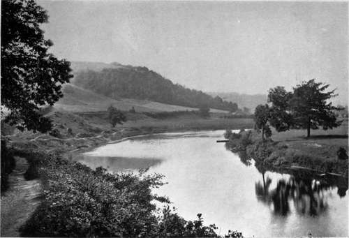

Chapter IX. England And Wales
Description
This section is from the book "Salmon Fishing", by W. Earl Hodgson. Also available from Amazon: Salmon Fishing.
Chapter IX. England And Wales
Avon-Test-Frome-Axe-Yarty-Otter-Exe- Teign- Dart-Avon, Devonshire-Ernie-Plym-Tamar- Tavy -Gralm-Walkham-Lynher-Fowey-Camel-Taw- Torridge - Lynn - Severn - Wye - Usk - Dwyfawr- D wy fach-E rch - Soch-Glasly n-Do vey-Dy sy nni- Artro-D wy ryd- Prysor-Mawddach-Wnion-Seiont -G wyrfai-Lly fni-Dee-Elwy-Clwyd -Lune-Wyre -Kent-Leven-Duddon-Eden-Coquet-Aln-Tyne -Wear-Tees-Esk-Thames.
The Avon is associated with agreeable memories. A few years ago, on returning one night to my abode, in the Albany, I found a note from a very energetic lady, to whose country-house, near Wimborne, I was engaged to go next day. She had come up to town, and was staying over-night. She was going to bicycle back to the country next day, starting at four o'clock in the morning. Would I care to go with her? My portmanteau could be sent by train. Well, it was already past two o'clock, and I had been up all night, leader-writing and editing; but what of that, after all ? This was Saturday morning. I should not have to write or edit until Sunday night. Of course I would go. I had a bath and breakfast, and was at Eaton Place punctually, to the vague astonishment of a loitering policeman, whose "Good morning!" was suspicious though sleepy. All went well for three or four hours; but there was trouble on the Portsmouth Road. One of the pedals of my bicycle dropped off, and the nuts could not be found. The energetic lady was nothing daunted. There was a smithy nine miles on, she said. I could easily manage that distance with one pedal. I did manage it, though not easily, as the rain was drenching and the wind adverse; and was very glad to find that the task of repairing a bicycle was more than the village blacksmith could undertake. We went the rest of the way by train. Arrived, naturally I thought that the lack of the possibility of exchanging my sodden clothes for other garments of my own would permit, and even necessitate, repose; but that was wrong. The energetic lady mentioned that her son-in-law was staying there. When he came in he would lend me clothes. He did, I was sorry to say. The portmanteau, of course, came in time to enable me to be present at dinner. Near the end of the meal, the hostess, beside whom I sat, announced that she had a pleasant surprise for me. She was not much of a fisher herself, she said; but she had noticed that I had been a little disappointed with the Stour last time I had been down. Well, she wasn't astonished. There were only roach, and dace, and perch, and pike, and bream there. Now, what did I think ? She had got me leave to try for a salmon in the Avon ! The carriage would be at the door, to take me to the river, in twenty minutes! The gamekeeper was going with me. He had a rod and tackle all ready; also a few sandwiches and a flask. The energetic lady beamed with happiness. Very much occupied by high affairs, she knows not much, accurately, about men's pursuits, but studies them superficially, and always tries to please. I perceived, without any exchange of words on the subject, that she had heard some one say that the dusk was a good time for fishing, and that she assumed midnight to be even better. To reject her thoughtful generosity was quite out of the question. I would at least go to the Avon, and look at it, and come back. However, when we reached the river, after a long drive through mysterious glooms, things wore a different aspect. Why not try a few casts ? The carriage was off to the inn, over what looked like a meadow, and the gamekeeper had gone to help the coachman. When they returned I had the honour of stating that the gaff was needed. It had been left in the carriage. Back they flew, and when they were with me again they were accompanied by the landlord of the inn, who looked astonished to behold a person in evening uniform, down to the footgear, fighting with a salmon at such an hour. The fish got off. I had him almost touching the lush grass at the rim of the river; but in the uncertain moonlight shining through clouds the gamekeeper bungled with the gaff, and the fish slid off. The landlord was very sympathetic. He assured me that it was only " a small fish." As it had seemed one of the biggest I had ever met in a casual way, this puzzled me. Next day I learned that any salmon under 21 lbs. is a small fish for the Avon. The salmon of that river run to weight. I did not stay very long that night; but I heard, and dimly saw, a good many of them splashing about, and they seemed very large. Lord Normanton, whose residence is near Ringwood, informs me that there has been a falling-off in the stock. He thinks that the chief cause of the decline is over-netting at the mouth of the river.
The severn at stagborough hill.
Valentine and Sons, Ltd.
The Test has of recent years been suffering from want of rain in summer. Not so many salmon as usual have run up. Mr. Douglas Everett, Romsey, writes:-
" There is no doubt that if there was a Board of Conservators on the river the salmon fishing would much improve. Proper regulations of the hatches at the mills, and perhaps of those at the water meadows, could be arranged. A look-out might be kept in the estuary at Redbridge and on the spawning beds. The upper proprietors who own trout fishing do not wish a Board of Conservators. I cannot think why. The salmon could be kept from running farther than Romsey. Regulations as to weed-cutting would be a boon to every fisherman on the river."
The Frome has been very markedly falling off during the last decade. The reason, Captain Radclyffe tells me, is not obvious. On the contrary, there should, it would seem, have been an increase of sport. Until about fifteen years ago a good many fish were every year taken in nets at the river mouth; but of late years the netting has been almost totally abandoned. Moreover, there have been no recent erections of mills, dams, or weirs, which might have affected the ascent of fish. "Nor is there any apparent cause of increased pollution. The old-fashioned towns of quaint and sleepy Dorsetshire which line its banks are not remarkable for growth of population. The factories remain almost as they were a hundred years ago. Fish in great numbers still run up in autumn, and spawn during winter. What is the ultimate fate of the ova, or fry, has long been a mystery. The capture of a grilse is an unheard-of event. The average weight of fish killed in the Frome has always been remarkably good. The five fish caught by myself during 1905 were no exception to the rule. The average was just under 30 lbs. The largest, a fine salmon, weighed 41 lbs.; the smallest, 22 lbs. All were taken with fly. A few years ago two or three good rods could have as many as forty or fifty clean fish in the first three months of the season. Now the same rods would consider themselves lucky to have ten or twelve. The Board of Conservators are at a loss to explain why, whilst many fish ascend the river in autumn, only a few now run during spring and summer; nor can they account for the absence of grilse. I myself have long suspected that the steadily increasing mass of weeds in spring and summer chokes the lower reaches to such an extent that the salmon on entering the river find it almost impossible to force their way, and that they drop back into tidal waters. When the weeds die down in autumn the fish have a clear run. Scarcely one of the riparian owners for many miles on the lower reaches is a fisherman, or takes the slightest interest in the salmon or in weed-cutting, and the river bed has been sadly neglected. The absence of grilse is the more mysterious inasmuch as great numbers of salmon parr may be seen making their way to the sea. It is true that the whole river swarms with pike and other coarse fish; but that, surely, cannot be the full explanation. The lightest fish I have killed on the Frome weighed 12 lbs. The absence of small fish is peculiar to the Frome and the Avon. I cannot recall an analogy in my experience, which extends to many rivers of Britain, Scandinavia, Iceland, and America."
Continue to:
Tags
salmon, fish, river, fishing, trout, loch, flies, fishing flies